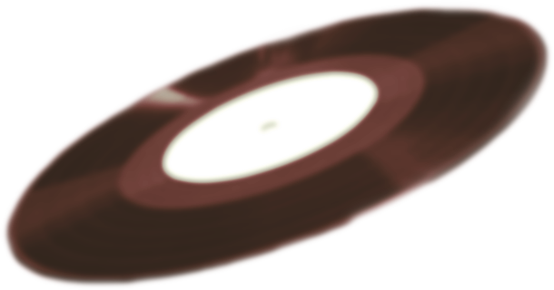
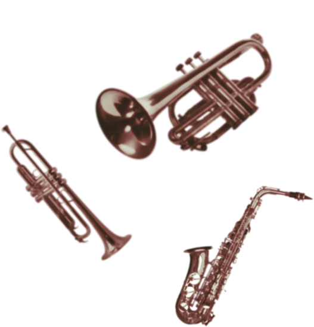

Today Beatboxing has evolved far beyond simple clicks and snaps.
New sounds are being developed everyday and vocal percussionist have been featured in genres like rock, pop, country, electronic and even classical. Looking back it’s hard to imagine those guys keeping time in a Barber Shop quartet on the wrong side of the tracks were laying the foundation for an international community of Beatboxers some of who have signed multimillion dollar record deals. Maybe the next one
will be you?